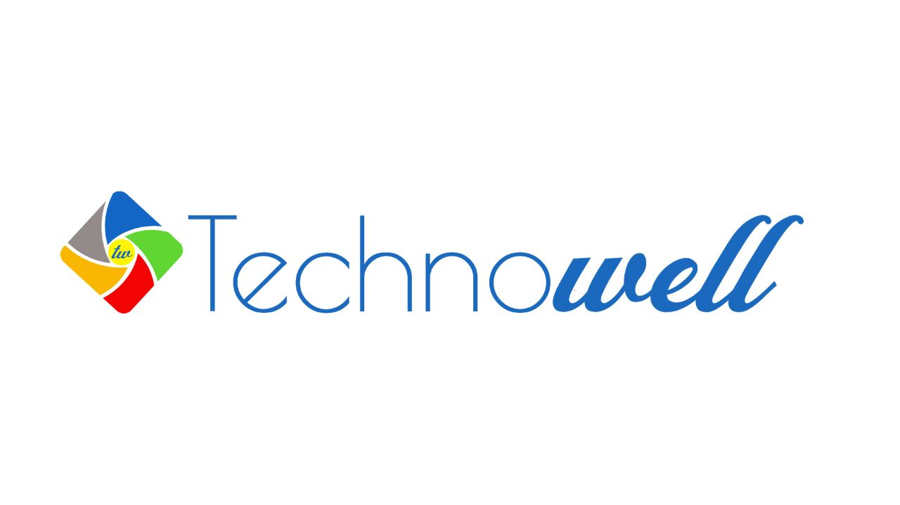
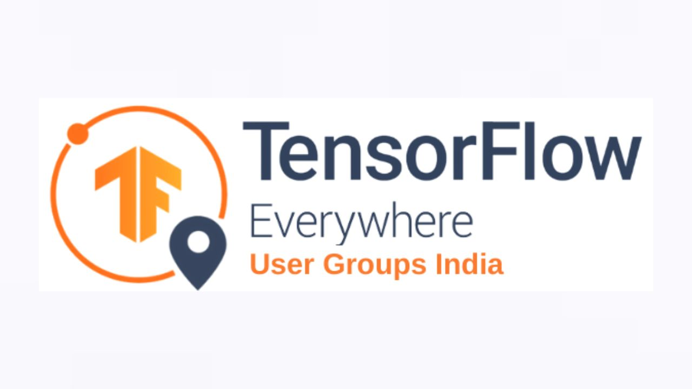

Experience that bridges research, engineering,
and real-world AI deployment
My professional journey spans enterprise-grade AI systems, geospatial data engineering, generative AI, and open-source innovation. From building production ML pipelines on AWS to contributing to global developer communities, I focus on solving meaningful problems with scalable, data-driven solutions.
My journey in technology is driven by curiosity, experimentation, and impact.
With a strong foundation in Computer Science and Electronics, I’ve evolved from
building machine learning models to architecting full-scale AI systems deployed
in production environments.
Across startups, enterprises, and open-source communities, I’ve worked on
Generative AI, NLP, computer vision, geospatial analytics, and cloud-native data
pipelines. Whether it’s designing RAG-based AI assistants, optimizing deep learning
models, or extracting insights from satellite imagery, I thrive at the intersection
of theory and execution.
What sets me apart is my ability to translate complex technical ideas into reliable,
business-ready solutions — while continuously learning, mentoring, and contributing
back to the community.
Industry Roles
Worked as Data Scientist, Machine Learning Engineer, and Geospatial Data Engineer, building scalable AI pipelines, real-time analytics systems, and cloud-deployed ML services.
Open Source & Community
Active contributor to TensorFlow User Group, NVIDIA, GitHub Actions, Kaggle, and developer communities worldwide, collaborating on ML tools and automation workflows.
Continuous Learning
Certifications, workshops, research publications, and hands-on experimentation in Generative AI, MLOps, cloud platforms, and advanced data engineering.
Professional Experience & Contributions

Technowell Enterprise Services
Working at the convergence of AI, ML, and geospatial intelligence. I build data pipelines, develop change detection algorithms, and deploy scalable AI systems on cloud platforms. Contributed to environmental monitoring, enterprise AI workflows, and research-driven geospatial analytics.
Zummit Infolabs
Deep learning internship focused on CNN, GAN, RNN, crowd anomaly detection, and emotion recognition. Optimized models for real-time AI systems, improving accuracy and inference performance.
Upwork (Freelance)
Delivered global projects in Python, data science, visualization, object detection, and research analytics. Strengthened client communication and real-world problem-solving skills.
Microsoft Student Community
Worked on big data analysis, forecasting models, and mentoring ML projects. Focused on collaborative learning, leadership, and AI-driven solutions.
Kaggle
Participated in ML competitions and research datasets, collaborating with the global data science community and experimenting with real-world datasets.

TensorFlow User Group
Open-source contributions, ML research collaboration, and Python engineering. Gained deep understanding of scalable ML architectures and community-driven development.